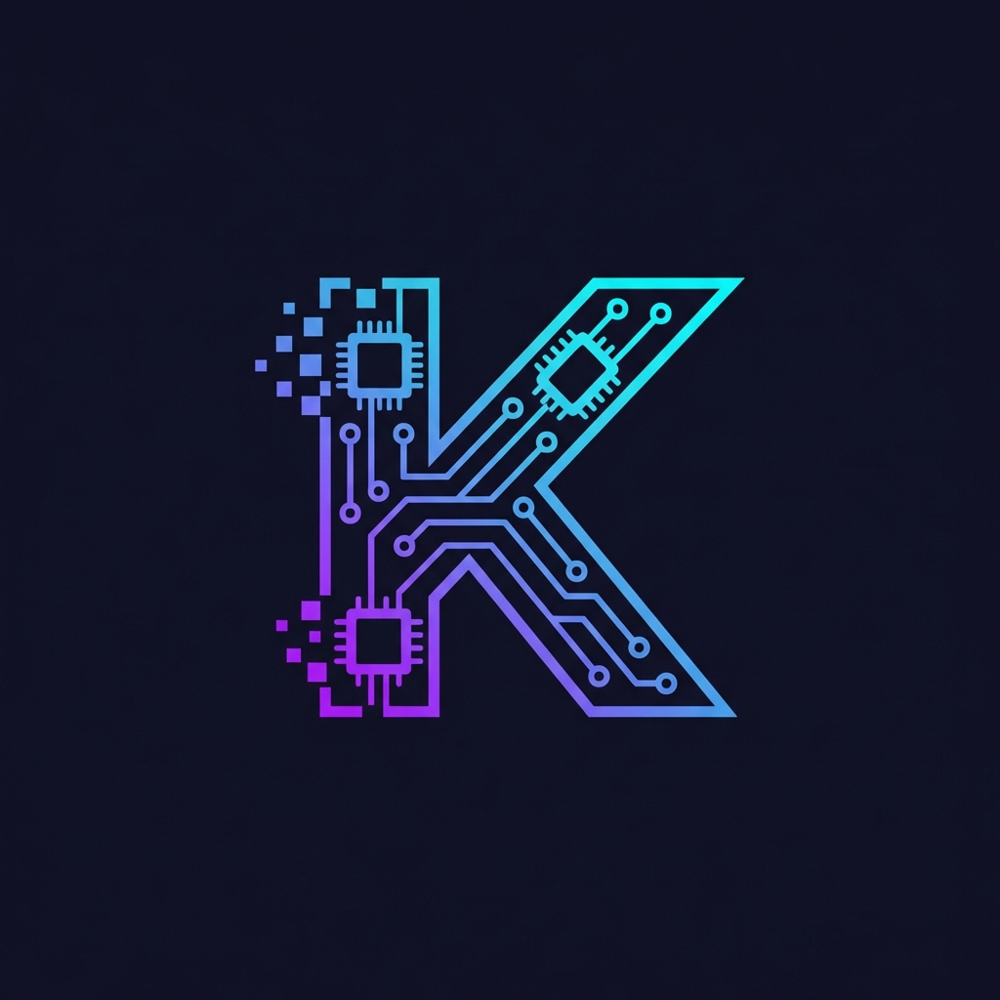

Knurdz
We are building something extraordinary for the obsessed, the passionate, and the curious.
Launching soon

We are building something extraordinary for the obsessed, the passionate, and the curious.